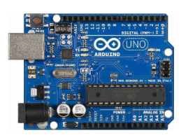
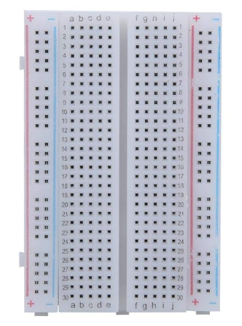
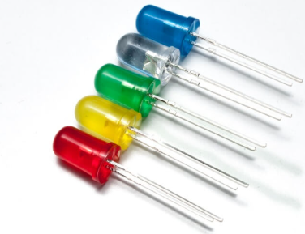
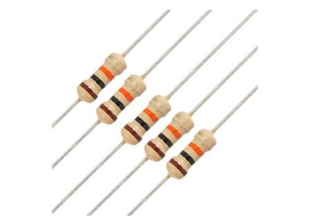
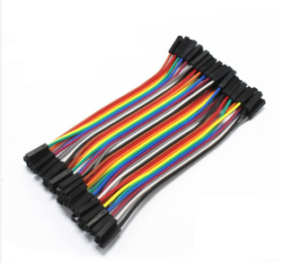
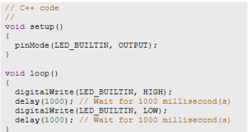

1. Encender un LED con Arduino UNO
Componentes:
Arduino UNO R3

Placa de pruebas

LED

Resistencia

Cables

Conexión:
El pin digital 7 del Arduino se conecta a través de una resistencia al ánodo (pata larga) del LED. El cátodo (pata corta) del LED se conecta al riel GND de la protoboard, que está enlazado al pin GND del Arduino. Este montaje permite controlar el encendido y apagado del LED mediante programación.
Código:
